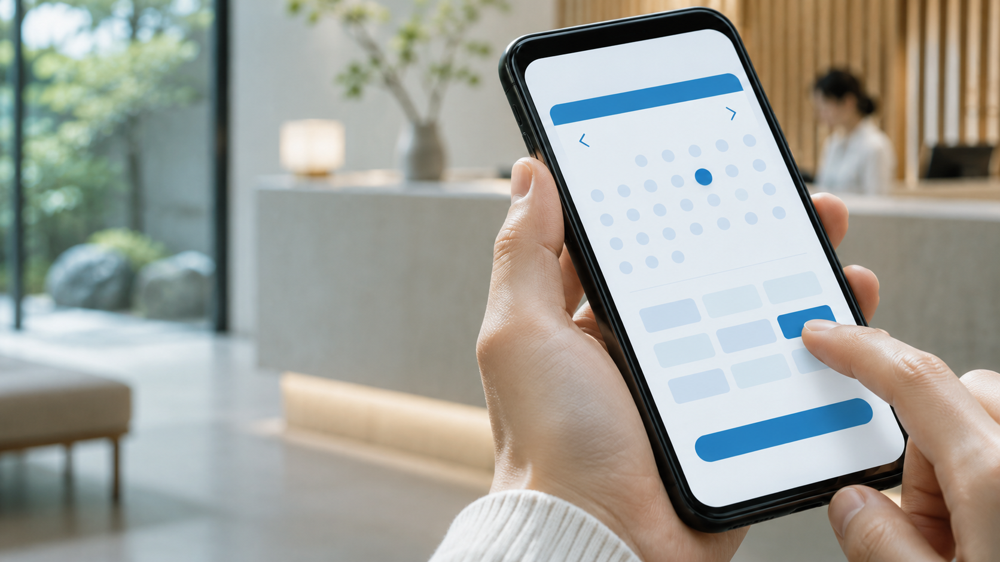

予約する人にも、
受付する人にも。
使いやすい流れを。
予約の取り方や、受付で確認したいこと。
実際の流れをお聞きしながら、必要な画面を考えます。
予約・受付の画面イメージ

予約も、会員管理も、日々の業務も。事業に合わせたWebアプリ開発予約も、会員管理も。
日々の業務に合う
Webアプリを。
予約・受付 顧客・会員管理 社内業務
「こんなことはできる？」から、お聞かせください。
画面はご相談テーマを表す架空のイメージです。開発実績・提供機能を示すものではありません。
予約の取り方や、受付で確認したいこと。
実際の流れをお聞きしながら、必要な画面を考えます。
お客様とつながる
会員画面のイメージ
どんな情報を管理し、どんな体験を届けたいか。
お客様側と運営側、両方の使い方から整理します。
会員情報：管理したい項目や、確認する場面から考えます。
掲載項目は相談テーマです。対応範囲は個別に確認します。予約サービスを想定した架空の画面イメージ
紙や表計算で行っている管理。
何度も繰り返している確認や転記。
いまの業務を出発点に、アプリの使い方を考えます。
誰が、いつ、どこで使うのか。
スマートフォンやPCでの使い方を含め、
必要な画面や情報の流れを相談できます。
どんな事業で、誰が利用するのか。いま困っていることや、実現したいことをお聞かせください。
予約する、お客様を確認する、業務を進める。実際に使う場面から必要な画面を整理します。
最初に必要なこと、後から検討したいこと。優先順位や対応範囲を個別に相談します。
ご相談内容に応じて、進め方や確認が必要な項目を整理します。費用・納期は内容を確認したうえでのご案内です。
日々の作業や管理の課題を、具体的な使い方から相談できます。
アイデアや構想の段階から、利用する人の体験を考えます。
アプリ開発の相談テーマ
繰り返す入力や、情報の探しにくさ。身近な困りごとが相談の入り口です。
業務への活用を見る ›企画書にまとまっていなくても、実現したいことからお聞かせください。
相談の進め方を見る ›はい。いまの業務の課題や、実現したいことからお聞かせください。
予約・受付、顧客・会員管理、社内業務、新しいサービスの立ち上げなど、事業に合わせたWebアプリ開発をご相談ください。
内容・規模・必要な対応によって異なります。ご相談内容を確認したうえで個別に検討します。
掲載画面は、ご相談テーマをわかりやすくするための架空のイメージです。実績や提供機能を示すものではありません。
実現したいことや、
いまの課題をお聞かせください。
予約・顧客管理・社内業務など、
使う場面から相談できます。
まだ構想の段階でも、
アイデアからお聞かせください。
このページは制作確認用です。入力した内容が外部へ送信されることはありません。